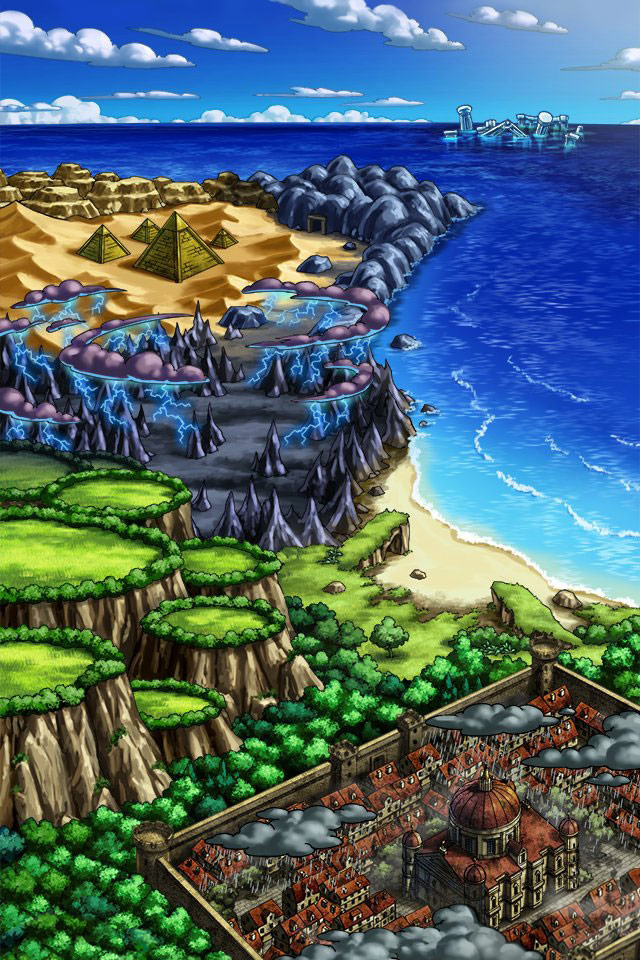

我が名はルシアス…このゲートを司る神…
ライバーンを解放せし者…Shou-chanよ…
我が力を使い新たなる地へと旅立つがよい…
秩序を失いし世界に新たな福音をもたらすため…
己の力を信じ前へと歩み続けるのだ…


ルジーナ
ったく命の恩人様を待たせるとは 相変わらずナメてやがんな！
ルジーナ
頭の悪いテメーにもわかるように 俺様が丁寧に教えてやるよ。
ルジーナ
俺様の天才的な頭脳が お前がピンチになるのを先読みしてだな…
ルジーナ
ヤツが俺にお前たちのフォローを するよう頼んでたんだ。
ルジーナ
ついに召喚院も俺様の実力を認めた って訳だな！
ルジーナ
で、まあついでに頼まれたのが あのスカしたカルの野郎の救出なんだが
ルジーナ
まさか命の恩人様の頼みを 断ったりはしねーよな！？
ルジーナ
それじゃあ、まずは帝都アグニに向かうぞ。
ルジーナ
俺様が仕入れた情報が正しけりゃ、 このアグニにカルは捕まってるはずだ。
ルジーナ
ここには面倒な場所が多いが まずは帝都からってもんだろ。
ルジーナ
あのメアとかいう神徒が まだお前を狙ってるだろうから
ルジーナ
せいぜい襲われねーように 祈りながら歩くんだな！